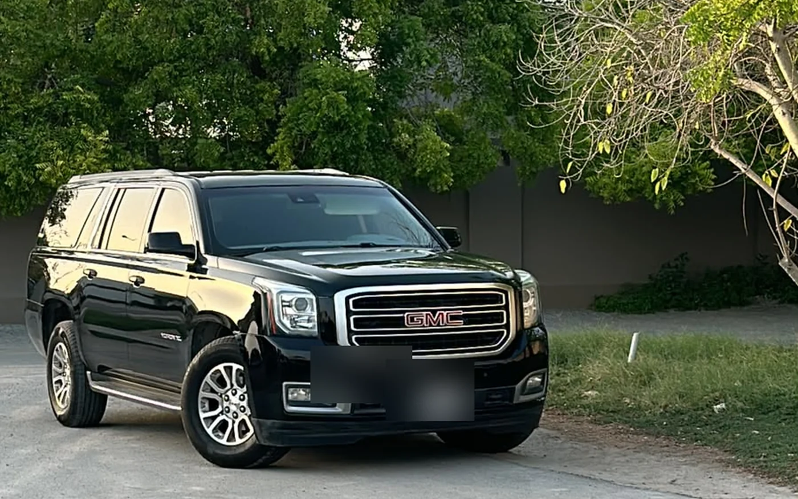
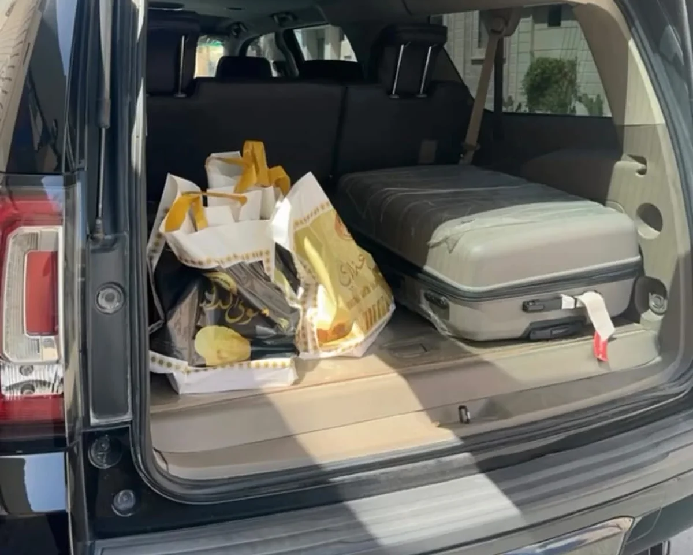
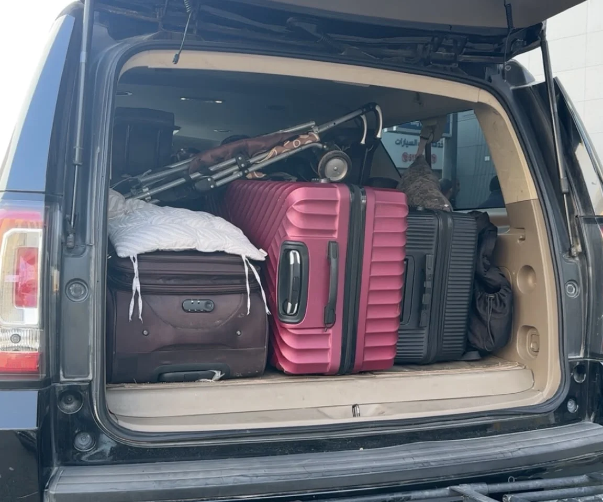
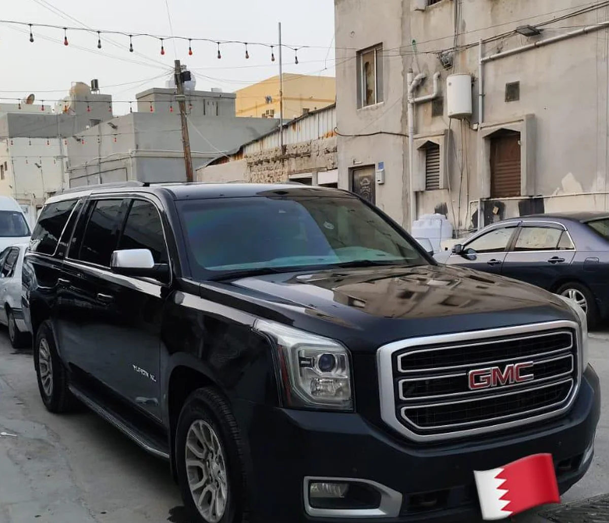
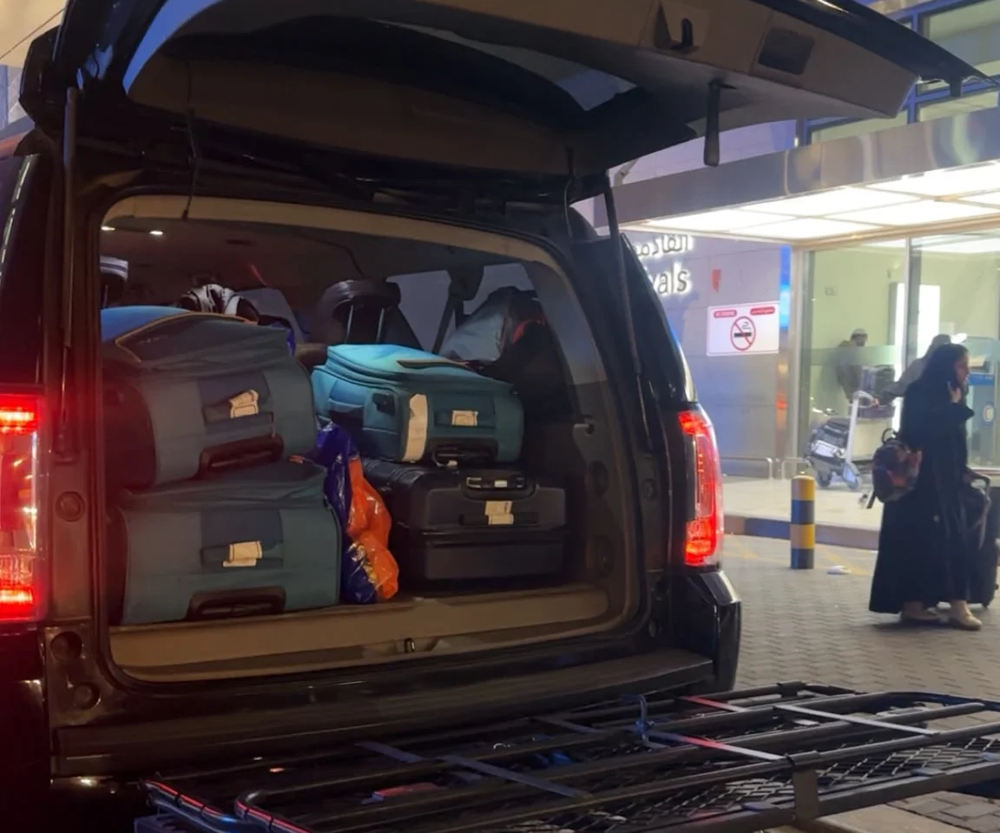

1. خيار السواق الخارجي
- قد يكون أرخص سعراً
- غالباً أقل تنظيماً وتنسيقاً
- يتابع العميل التفاصيل بنفسه مباشرة
- خارج نطاق مسؤولية GetVendora
ننسق رحلتك بين البحرين والسعودية وقطر والكويت والإمارات وعمان والعراق. GetVendora لا تعطيك فقط رقم سواق. نحن ننسق تفاصيل الرحلة، وقت الاستلام، عدد الركاب، الشنط، المطار أو الجسر، ونؤكد الطلب عبر واتساب.
لا توجد أسعار ثابتة في هذه النسخة. السعر يتم تأكيده بعد إرسال تفاصيل الرحلة.

هذه الصفحة دليل عملي قبل أن تكون صفحة حجز. تساعدك على فهم المسارات، المطارات، اختيار السيارة، تجهيز الحدود، تفاصيل واتساب، وطريقة طلب السعر قبل تأكيد الرحلة.
المخطط لا يحسب سعراً ثابتاً. نقوم بتنسيق رحلتك بمسؤولية لضمان مطابقة متطلباتك مع السيارة المناسبة بدلاً من إرسال سائق عشوائي. وظيفته تجهيز رسالة واتساب واضحة تساعد الفريق على الرد عليك.
يبحث بعض المسافرين فقط عن أرخص سائق متاح، لكن الخيار الأقل سعراً ليس دائماً الأكثر تنظيماً أو وضوحاً في التواصل. في GetVendora، تركيزنا الأساسي هو تنظيم تفاصيل الرحلة لضمان رحلة سلسة ومسؤولة. إذا كنت ترغب فقط في سائق خارجي رخيص، فهذا الترتيب يكون خارج مسؤوليتنا وغير مدار من قبلنا. ولكن عند الحجز معنا، نضمن تنسيق جميع التفاصيل بعناية.
تم ترتيب المسارات حسب نية البحث الحقيقية: السعودية والمطارات أولاً، ثم دول الخليج والعراق. كثير من العملاء يبدأون بمسارات البحرين إلى الخبر، الدمام، مطار الدمام DMM، الرياض أو رحلات الزيارة إلى العراق.
مسار سريع عبر جسر الملك فهد للعائلات والعمل والفنادق.
تفاصيل المسارمناسب للمواعيد، العائلات، والانتقال بين المدن الشرقية.
تفاصيل المساررحلة طويلة تحتاج وقتاً أوضح وتخطيطاً للشنط والتوقفات.
تفاصيل المساررحلات العائلات والزيارة إلى النجف وكربلاء تحتاج تجهيزاً مبكراً.
تفاصيل المسارنوفر خدمة سائق خاص إلى الظهران، الجبيل، القطيف، الهفوف، الأحساء، بقيق، رأس تنورة، ومنطقة أرامكو، وهي مسارات مهمة للعمل والشركات والعائلات للتنقل بين البحرين والسعودية.
رحلات الدوحة ومطار حمد الدولي DOH تحتاج توضيح الوقت والشنط وهل توجد عودة أو توقفات.
مسار قطررحلات مدينة الكويت ومطار الكويت KWI تحتاج عدد الركاب والشنط وتوقيت الرحلة قبل التسعير.
مسار الكويتدبي، أبوظبي، DXB، AUH، مسقط وMCT رحلات خليجية طويلة تحتاج راحة وتخطيط توقفات.
مسار الإمارات
أرسل وقت الرحلة ورقم الطيران. في رحلات BAH وDMM وRUH وDOH وKWI وDXB وAUH وMCT، اترك وقتاً إضافياً للطريق وإجراءات المطار وأي عبور حدودي حسب المسار.

عدد الركاب وحده لا يكفي. عدد الشنط والحقائب، الأطفال، الكراسي، مدة الطريق، والعودة في نفس اليوم كلها تؤثر على السيارة المناسبة. رحلة عائلة للمطار قد تحتاج مساحة أكبر من مشوار قصير.
توصيل المستندات والطرود يكون حسب المسار، الوقت، نوع الغرض، وإمكانية قبوله. لا يتم قبول أي غرض غير واضح أو مخالف.
رحلات قطر والكويت والإمارات وعمان تحتاج تخطيطاً للوقت والراحة والشنط والتوقفات.
لرحلات العائلة، اذكر عدد الأطفال والشنط الكبيرة والعربة أو أي احتياج لكبار السن أو الركاب قبل تأكيد السيارة.

لرحلات العمل وVIP، أرسل وقت الاجتماع، موقع الفندق أو المكتب، متطلبات الخصوصية، وقت الانتظار، وهل الرحلة من المطار إلى اجتماع أو من اجتماع إلى الحدود.
تستطيع GetVendora تنظيم تفاصيل التوصيل، لكن المتطلبات الرسمية تبقى مسؤولية المسافر.
لا يمكن ضمان الموافقة الحدودية أو التأشيرة أو الجمارك أو إجراءات المطار أو الموافقة على السفر.
هذه الملخصات تساعد العميل على فهم المسارات القصيرة عبر الجسر والمسارات الخليجية الطويلة التي تحتاج تجهيزاً أكثر.
مسارات الخبر، الدمام، الرياض، الظهران، الجبيل، القطيف، الهفوف والأحساء تحتاج تخطيطاً لجسر الملك فهد وتفاصيل استلام دقيقة.
رحلات الدوحة ومطار حمد الدولي DOH تحتاج توضيح الوقت والشنط وهل الرحلة ذهاب فقط أو عودة.
رحلات مدينة الكويت ومطار الكويت KWI تحتاج عدد الركاب والحقائب والوقت ونوع الرحلة قبل طلب السعر.
دبي وأبوظبي وDXB وAUH مسارات طويلة داخل الخليج، وتحتاج اهتماماً بالراحة وتوقيت العمل والشنط.
مسقط وMCT تحتاج تخطيطاً لمسافة طويلة وتوقعات واضحة للتوقفات والشنط.
النجف وكربلاء غالباً تكون رحلات عائلية أو زيارة، لذلك يفضل إرسال تفاصيل الركاب والشنط مبكراً.

يغطي الدليل طلبات مطار البحرين BAH، مطار الدمام DMM، مطار الرياض RUH، مطار حمد الدولي DOH، مطار الكويت KWI، دبي DXB، أبوظبي AUH، ومطار مسقط MCT حسب توفر الرحلة.
خدمات المطارعند حجز تاكسي جسر الملك فهد، يجب التخطيط لزمن العبور ورسوم عبور الجسر والانتظار المحتمل. يمكن متابعة زحمة الجسر عبر تطبيق جسر، مع إمكانية تنسيق رحلات يوتيرن الجسر سريعة لتعديل الوضع وتجديد الفيزا أو رحلات العودة في نفس اليوم حسب التوفر. يرجى العلم بأن متطلبات السفر والوثائق الرسمية تقع تماماً على مسؤولية المسافر.
دليل الجسرهذا الدليل لا ينشر أسعاراً ثابتة حالياً. السعر الصحيح يعتمد على المسار، نقطة الاستلام، الوجهة، التاريخ، الوقت، عدد الركاب، عدد الشنط، السيارة المناسبة، وقت الانتظار، وتفاصيل الرجعة.
لا توجد أسعار ثابتة؛ تعتمد تكلفة التوصيل من البحرين إلى الدمام أو الخبر على نقطة الاستلام الدقيقة (مثل السيف أو الجفير أو مطار البحرين)، والوجهة، وعدد الركاب، والشنط. يمكنك طلب السعر عبر واتساب والحصول على عرض سريع بناءً على تفاصيل رحلتك.
نعم، يمكنك حجز سائق خاص أو سواق خاص من البحرين إلى السعودية لضمان بقائك في نفس السيارة عبر الحدود وتنسيق ليموزين البحرين السعودية لتجنب تغيير السيارات على جسر الملك فهد.
نعم، نقوم بتنسيق خدمات التوصيل والليموزين إلى كافة مدن المنطقة الشرقية بالسعودية (مثل الظهران، الجبيل، القطيف، الهفوف، الأحساء، بقيق، ورأس تنورة) شاملةً رحلات التوصيل والاستقبال من مطار الدمام إلى البحرين.
نعم، نوفر خيارات سيارات عائلية واسعة (مثل جمس يوكن 7 مقاعد أو ما يعادلها حسب التوفر) لتوفير مساحة كافية للعائلات مع شنط وحقائب السفر الكبيرة. يرجى توضيح متطلباتك مثل مقعد أطفال عند الحجز.
نعم، يمكن ترتيب رحلات العودة في نفس اليوم أو رحلات سريعة لتجديد الفيزا وتعديل الوضع عبر الحدود (يوتيرن الجسر) حسب توفر السيارات والانتظار المطلوب.
عند طلب السعر وتنسيق الرحلة عبر واتساب، سنوضح لك ما إذا كانت رسوم عبور جسر الملك فهد وتكاليف الانتظار أو المطار مشمولة في التسعيرة لضمان الشفافية الكاملة.
نعم، نقوم بتنسيق رحلات طويلة بين البحرين وكافة دول الخليج والعراق، بما في ذلك الدوحة (قطر)، مدينة الكويت، دبي وأبوظبي (الإمارات)، مسقط (عمان)، والنجف وكربلاء (العراق) لرحلات الزيارة والعائلات.
نعم، يمكنك طلب السعر أو حجز السائق مباشرة عبر واتساب. يقوم مخطط الرحلات بتجميع كافة تفاصيل رحلتك (الوجهة، التاريخ، الركاب، الشنط) في رسالة منظمة لتسهيل عملية التأكيد السريع.
أمثلة على استفسارات واتساب الشائعة: نفهم جميع اللهجات الخليجية ونستقبل استفسارات مثل: «ابي توصيل للدمام»، «ابغى سواق للخبر»، «بكم التوصيل للدمام»، «جم سعر المشوار للخبر»، «ابي سيارة عائلية للسعودية»، «شلون احجز»، «شنو سعر التوصيل»، «يوتيرن الجسر»، أو «مشوار للجسر».
سواء كنت تبحث عن نقل من البحرين إلى السعودية، سائق خاص من البحرين، ليموزين البحرين، توصيل مشاوير المنطقة الشرقية، سواق للجسر، نقل عائلي، نقل زوار، أو نقل الأربعين وكربلاء، فإننا نساعدك في تنسيق كافة التفاصيل.